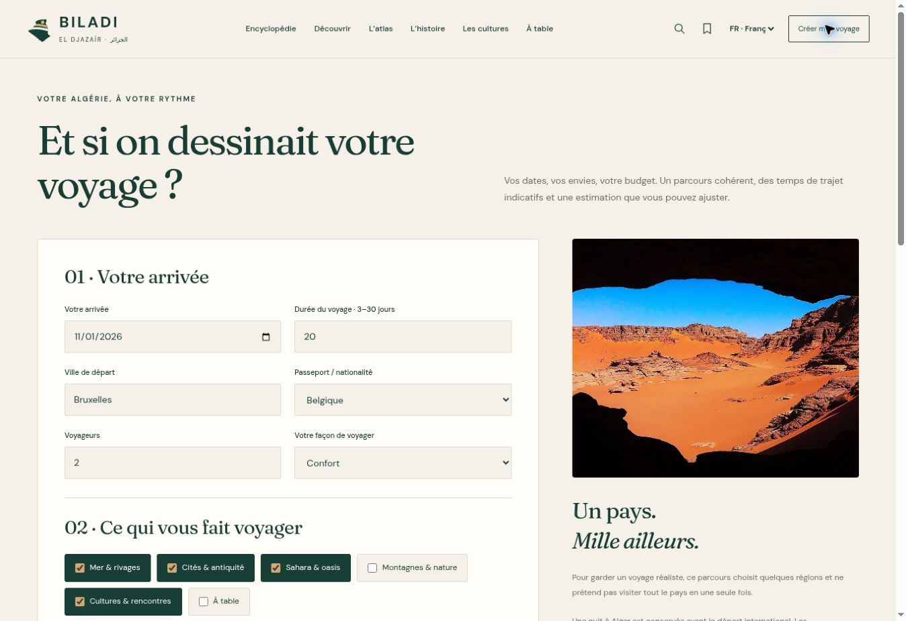

NOVALIS / INTERNAL PROJECT
BILADI
Ein Gebiet erkunden und Entdeckungen in eine Route umwandeln.
Öffentliches Projekt im Ausbau
Kontext
Eine territoriale, historische und kulturelle Sammlung zu Algerien.
Problem und Ziel
Eine reichhaltige Sammlung auffindbar und für Erkundungen nutzbar machen.
Nutzer
Neugierige Leser und Reisende.
Sichtbare Funktionen
SVG-Atlas, Suche, belegte Inhalte/Fotos, Routenpräferenzen, anpassbares Budget und Kalenderexport.
Architektur
HTML/CSS, JavaScript-ES-Module, JSON, SVG und Browserspeicher; statische Veröffentlichung.
Status und Grenzen
Deterministischer Planer; keine Livebuchungen oder -preise. Redaktioneller Ausbau läuft.
Diese Beispiele sind keine bezahlten Kundenreferenzen.
Ihr Projekt besprechen ↗